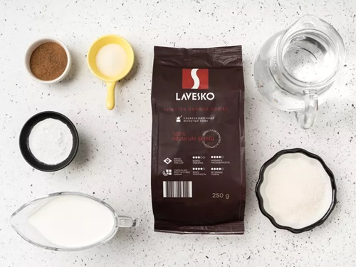
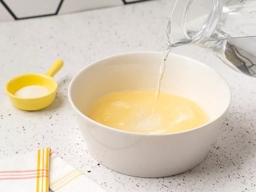
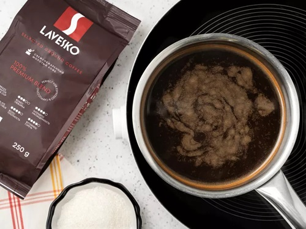
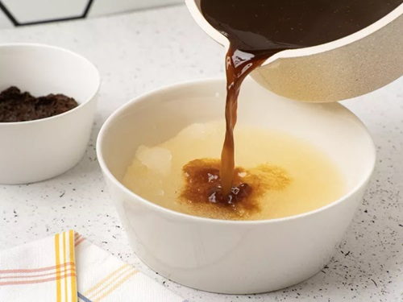
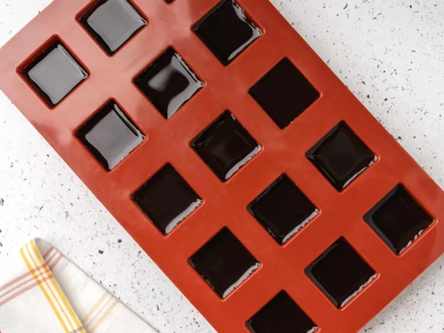
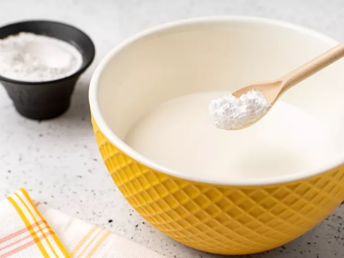
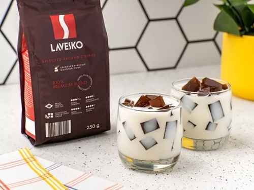

|
|
супы салаты гарниры десерты мои рецепты |
Кофейное желеКофейное желе особенно распространено в Японии. У него глубокий вкус и аромат. Десерт будет выглядеть особенно эффектно, если нарезать желе кубиками и подать с белым соусом из сливок. Вместо них также можно взять молоко. Сварите кофе желаемой крепости, подсластите по вкусу, соедините с желатином и остудите в прямоугольной форме. Нарежьте кубиками и подайте с соусом в креманках. Ингредиенты
ПриготовлениеПодготовкаПодготовьте миски, большую турку для кофе, сито, сотейник, форму для желе. Шаг 1Высыпьте желатин в миску, залейте его 180 мл прохладной воды. Хорошо перемешайте и дайте постоять 5–10 минут, чтобы желатин разбух. Шаг 2Всыпьте в турку, кастрюлю или сотейник молотый кофе, сахар и корицу. Налейте к ним 500 мл воды для желе. Поставьте на средний огонь, дождитесь, когда пена на поверхности кофе начнет подниматься. Снимите турку с огня на 20–30 секунд, чтобы пена осела. Снова поставьте кофе на огонь, доведите до первых признаков кипения. Уберите турку с плиты, перемешайте кофе и дайте ему настояться 1–2 минуты. Если любите более сладкие десерты, добавьте еще 1 ст.л. сахара. Но помните, желе подают со сладким соусом. Шаг 3Процедите кофе через сито в сотейник и поставьте на средний огонь. Снова дождитесь признаков кипения и снимите сотейник с огня. Влейте кофе в разбухший желатин и все тщательно перемешайте, пока все гранулы не растворятся. Шаг 4Перелейте кофе с желатином в форму. Дайте смеси остыть до комнатной температуры и поставьте в холодильник на 2–3 часа до полного застывания. Шаг 5Налейте холодные сливки в чистую миску. Всыпьте к ним сахарную пудру и хорошо перемешайте. При желании соус можно нагреть и слегка уварить, но тогда придется остудить его перед подачей. В горячем соусе желе может растаять. ПодачаРазложите кубики кофейного желе по порционным креманкам или невысоким бокалам. Равномерно полейте сладкими сливками, чтобы они едва доставали до верхнего слоя желе. |
Наверх |
| © рецепты без лишних слов |